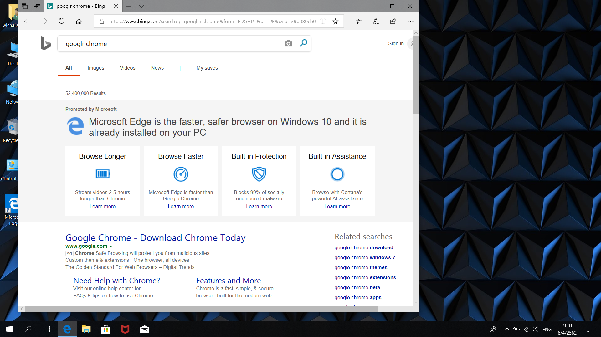

Hello World!
why there's no change logs
so I have to run the file to make the changes appear on github?
no, I just have to save the file, but it'll sum up all the changes I do in the same round
seems like I have to commit to make the change be recorded seperately in history
do i have to save, close the coding program, or just cick on github?
the answer is I have to save the file then click at Github
Greetings!

can't I solely add comment after committed?